1월
1월은 후쿠오카가 가장 추운 달입니다. 겨울바람이 불고 해가 뜨는 시간도 짧기 때문에 날씨는 더욱 춥게 느껴집니다. 평균 온도는 약 7℃(45℉)이며, 최고 온도는 10℃(50℉) 그리고
최저 온도는 4℃(39℉)입니다. 다운재킷이나 두꺼운 코트를 준비해야 합니다. 목도리, 장갑, 타이츠를 준비해도 좋습니다. 그리고, 도쿄보다 눈이 많이 내립니다. 도로가 결빙될 수
있으므로 주의해야 합니다!
하카타의 대표적인 행사 중 하나인 타마세세리 제례가 하코자키주
신사에서 열립니다. 이 행사는 사람들이 그 해 농촌과 바다에서의 풍년을 기원하는 축제입니다. 축제의 전통 중 하나는 일군의
남자들이 큰 나무 공을 갖기 위해서 필사적으로 벌이는 경합입니다.
2월
2월은 1월과 마찬가지로 춥습니다. 평균 온도는 약 7℃(45℉)이며, 최고 온도는 10℃(50℉) 그리고 최저 온도는 4℃(39℉)입니다. 그러나, 다행히도 겨울은 끝나 갑니다. 야외로
나갈 계획이라면 옷을 따뜻하게 입고 다운재킷, 목도리, 털모자 등을 준비하여 춥지 않도록 하세요.
세츠분 야쿠요케 키간 타이사이 축제가 다자이후 텐만구 신사에서 열립니다. 이
행사는 악귀를 물리치는 축제이기 때문에 사람들이 많이 찾으며, 무대에 콩을 뿌리는 등의 다양한 절차가
진행됩니다. 매화 나무 아래에서 박으로 만든 잔에 사케(일본 술)를 마시면 복을 받는다는 믿음이 있습니다.
3월
후쿠오카의 3월에는 여전히 겨울의 끝자락이 남아 있습니다. 평균 온도는 약 10℃(50℉)이며, 최고 온도는 14℃(57℉) 그리고 최저 온도는 7℃(45℉)입니다. 가벼운 코트, 재킷,
스웨터 또는 바람막이 외투를 준비하면 좋습니다.
다자이후 텐만구 신사 교쿠스이노니와(曲水の庭 곡수의 정원)에서
쿄쿠스이노엔 축제가 열립니다. 이 축제에서
사람들은 주니히토에(헤이안 시대에 여성이 입던 매우 아름다운 옷)와 같은 전통
복장을 입습니다. 이 축제에서는 시를 읊고 사케를 마시는 등, 헤이안 시대에 있었던 행사를 재현합니다. 아름다운 정원도 놓치지 말고 거닐어 보세요!
4월
4월의 평균 온도는 약 15℃(59℉)입니다. 최고 온도는 약 20℃(68℉)이며, 최저 온도는 약 11℃(52℉)입니다. 비는 많이 내리지 않기 때문에 관광하기 가장 좋은 시즌입니다.
벚꽃 놀이 시즌이지만 쌀쌀한 날도 있으므로, 소매가 긴 옷과 바람막이 외투를 준비하면 좋습니다.
봄 얘기를 할 때 벚꽃 놀이가 빠지면 서운하겠지요. 후쿠오카의 벚꽃 놀이는 시즌은 3월에서 4월 초입니다. 니시 공원, 홋신 공원, 구루메 옛 성터, 마이즈루 공원 등은 오랜 역사를
지니고 있으며, 지역 주민에게 잘 알려진 만개한 벚꽃을 감상할 수 있는 최고의 장소입니다.
5월
5월이 되면 후쿠오카는 급격히 따뜻해집니다. 평균 온도는 약 19℃(66℉)이며, 최고 온도는 24℃(75℉) 그리고 최저 온도는 16℃(61℉)입니다. 기온은 많이 올라가지만 짧은
소매를 입기에는 조금 이른 감이 있으므로, 소매가 긴 셔츠와 카디건을 입으면 좋습니다. 또, 가능하면 간단하게 걸칠 수 있는 옷을 들고 다닐 것을 추천합니다.
돈타쿠 마츠리는 5월의 대표적인 축제 중 하나입니다. 이 기간에는 멋진
퍼레이드도 진행되는 등, 하카타 전체가 축제 분위기에 휩싸입니다. 타이코를 두드리며 노래를 부르는 등, 재미있고
흥미로운 축제에 꼭 참가해 보세요!
6월
6월의 평균 온도는 약 23℃(73℉)이며, 최고 온도는 27℃(81℉) 그리고 최저 온도는 20℃(68℉)입니다. 6월 내내 온도가 올라가는데, 후쿠오카는 장마 시즌에 들어가면서 습기가
높아지고 숨이 턱 막힐 듯한 느낌이 듭니다. 야외 관광을 하는 경우 일사병에 유의하시고, 항상 수분을 섭취하시기 바랍니다!
6월에는 토바타 쇼부 마츠리 축제가 요미야 공원에서
열립니다. 50여 종류의 붓꽃 약 20,000송이를 감상할 수 있습니다. 장마 시즌에만 볼 수 있는 아름다운 꽃도 있으며, 벼룩시장과
노점에서 축제의 분위기를 즐길 수 있습니다.
7월
7월 역시 비가 많이 내리는 달입니다. 습도도 높아서 숨이 턱 막히는 듯한 전형적인 일본 여름 날씨를 느낄 수 있습니다. 평균 온도는 약 27℃(81℉)입니다. 최고 온도는 약
31℃(88℉)이며, 기온이 24℃(75℉) 미만으로 내려가는 경우는 많지 않습니다. 언제나 덥기 때문에 야외를 나갈 때는 짧은 소매가 좋습니다. 건물의 실내, 버스와 기차 등에는
에어컨이 있으므로 조금 춥게 느껴질 수도 있습니다.
하카타 기온 야마카사 축제가 구시다 신사에서 열립니다. 박력 넘치는 남자들이 1톤 무게의 거대한 카키야마(수레)를 운반하면서 도시를 퍼레이드합니다. 절대 놓쳐서는 안 될 멋진 광경입니다!
8월
한여름 8월의 평균 온도는 28℃(82℉)이며, 최저 온도는 25℃(77℉) 그리고 최고 온도는 32℃(90℉)입니다. 8월에는 비가 점차 잦아들지만, 7월과 같이 많이 더우므로 외출
때는 마실 물을 항상 준비해야 합니다! 다만, 실내에서는 에어컨을 틀기 때문에 춥게 느껴질 수도 있으니 주의해야 합니다. 실내에서 걸칠만한 소매가 긴 상의를 준비하면 좋습니다.
니시니혼 오호리 불꽃놀이 축제는 후쿠오카에서 가장 유명한 여름 불꽃놀이 축제 중 하나입니다. 매년 이 대규모 행사에 참여하기 위해 420,000만 명 이상의 사람이 방문합니다. 도시의
여러 곳에서 6,000발의 불꽃놀이를 감상할 수 있습니다.
9월
9월에도 여름의 열기는 여전히 남아 있습니다. 평균 온도는 25℃(77℉), 최저 온도는 21℃(70℉)이지만, 최고 온도는 28℃(82℉)까지 올라갑니다. 9월 중순부터는 찬 바람이
불기 시작합니다. 소매가 짧은 상의만 입으면 쌀쌀할 수 있으니, 소매가 긴 셔츠를 준비하면 좋습니다!
가을 하코자키 신사에서는 호조야 축제가 열립니다. 이 축제는 땅과 바다의 신에게 풍년의 감사를 드리는 축제로, 약 1,000년 이상의 오랜 역사를 지니고 있습니다! 감사 예식의 수많은
참석자와 함께 축제의 분위기를 즐겨 보세요!
10월
10월의 평균 온도는 약 19℃(66℉)로, 여름은 완전히 지나가고 완연한 가을 날씨를 느낄 수 있습니다. 최고 온도는 약 23℃(73℉)이며, 최저 온도는 15℃(59℉)까지도
내려갑니다. 재킷과 코트를 준비해야 하는 계절입니다! 특히 아침, 저녁으로 추울 수 있으니 주의하시기 바랍니다.
10월에 열리는 하카타 오쿤치 축제는 쌀농사의 풍작(가을 추수)을 감사하는 행사입니다. 이 축제는 후쿠오카의 가을을 대표하며 1,200년이 넘는 오랜 역사를 지니고 있습니다. 축제의
참가자는 미코시(神輿)를 선두로 도심을 퍼레이드합니다.
11월
11월에는 전형적인 가을 날씨를 느낄 수 있습니다. 평균 온도는 약 14℃ (57℉)이며, 최고 온도는 18℃(64℉) 그리고 최저 온도는 10℃(50℉)로, 조금 춥게 느껴질 수도
있습니다. 관광에 나서려면 재킷 또는 코트가 필요합니다. 목도리, 장갑, 털모자가 있으면 더 좋습니다.
11월 초에는 후쿠오카 전역에서 단풍을 볼 수 있습니다. 카츠야마 공원과 카마도 신사 등의 관광 명소에서 놀랍도록 아름다운 풍경을 감상할 수 있습니다. 특히, 라이잔 센뇨지 다이히오인
사찰에서는 수령 400년 이상의 거대한 단풍나무를 볼 수 있습니다!
12월
12월에는 강추위가 시작됩니다. 평균 온도는 9℃(48℉)이며 최고 온도는 13℃(55℉)로, 그 이상 기온이 오르지 않습니다. 최저 기온이 약 6℃(43℉)까지 내려가는 경우도
있습니다. 한국 겨울보다는 따뜻한 편이지만, 건조한 데다가 위쪽 바다에서 차가운 바닷바람도 불어 오기 때문에 뼈가 시리는 추위를 느낄 수 있습니다. 다운재킷 또는 두툼한 코트를 준비하여
춥지 않도록 해야 하며, 일부 기차와 버스는 난방이 너무 강하여 더울 수도 있으니 온도차에 주의하시기 바랍니다.
겨울 하카타에서는 베이사이드 일루미네이션 축제를 꼭 보아야 합니다. 하카타의 베이 지역이 불빛으로 아름답게 밝혀지면서 정말 환상적인 분위기를 자아냅니다. 베이의 반대쪽으로 보이는 풍경도
바다와 비교되어 정말 멋있습니다.
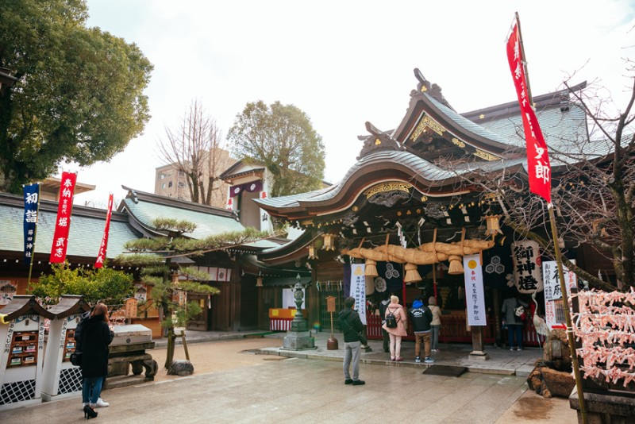
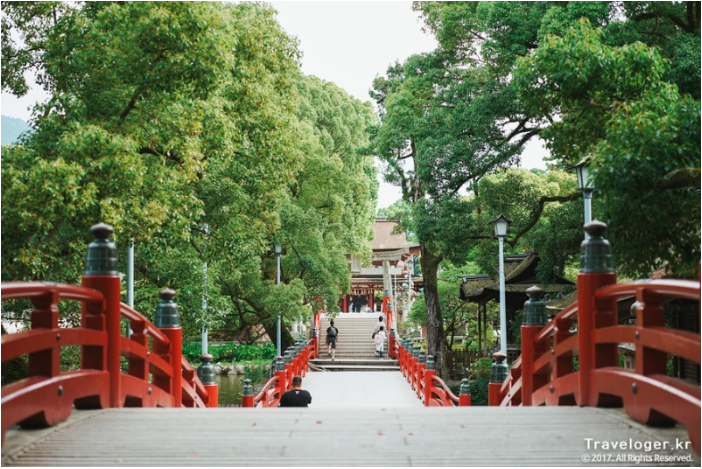
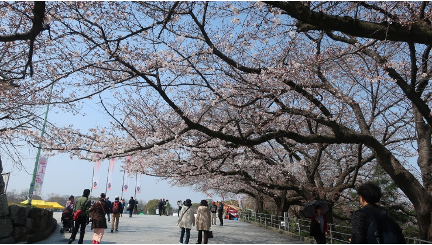
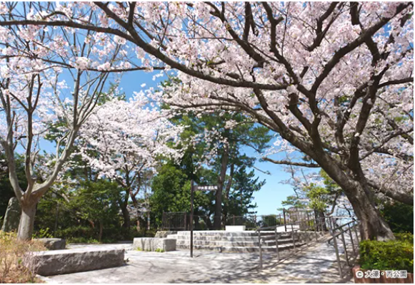
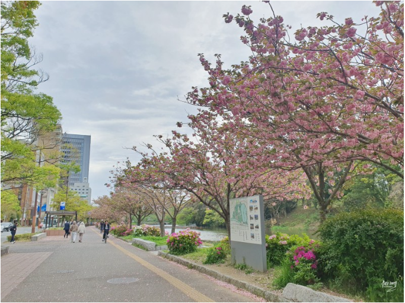
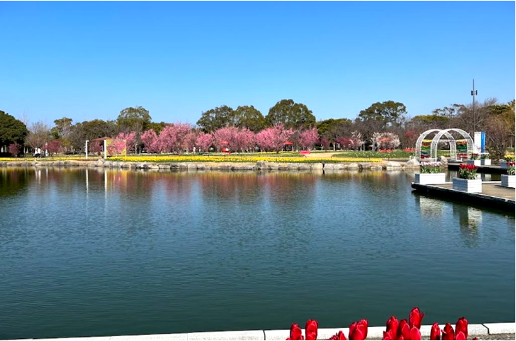
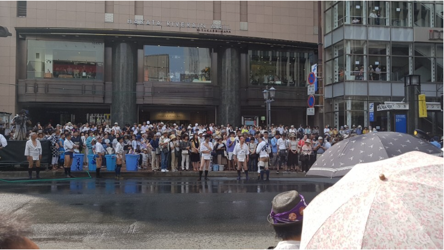
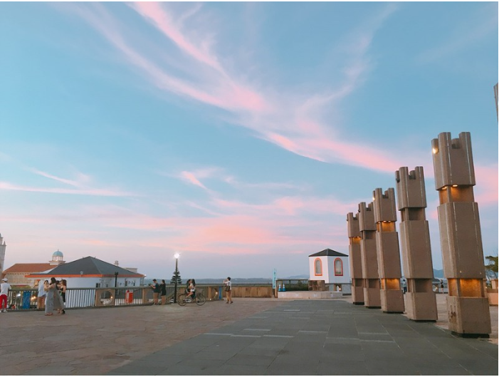
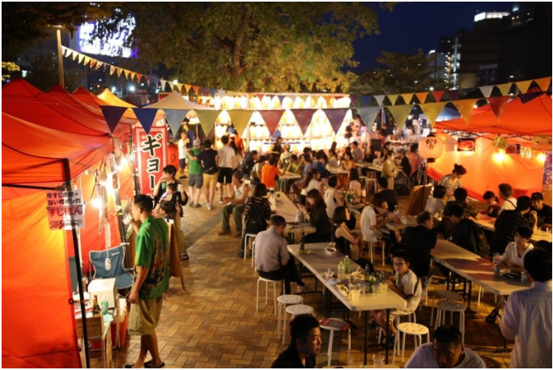
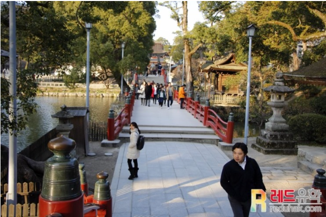
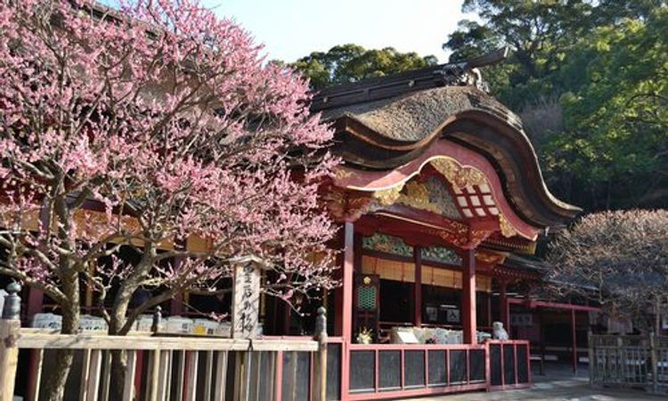